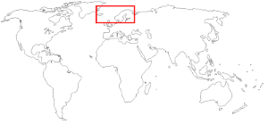
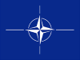

北约 对阵 华约
1975年8月至10月
在直布罗陀海峡跟踪一艘苏联“回声II”级（Echo II）潜艇时，护卫舰 HMS Ashanti 被击沉，人员伤亡惨重。在伦敦，首相将事件责任完全归咎于苏联，并要求苏联总理道歉并作出适当赔偿。
与此同时，苏联政治局指责皇家海军危险地违反国际海洋法，并将该事件称为“悲剧但不可避免”。双方均已将海军部队置于全面戒备状态。
在挪威海，大西洋常备海军部队（STANAVFORLANT）已从法斯莱恩出航，在扬马延岛（Jan Mayen Island）附近进入战备状态，并采取反潜态势。
在收到直布罗陀事件的消息后不久，所有北约部队已进入二级战备状态，现正为战争做准备！